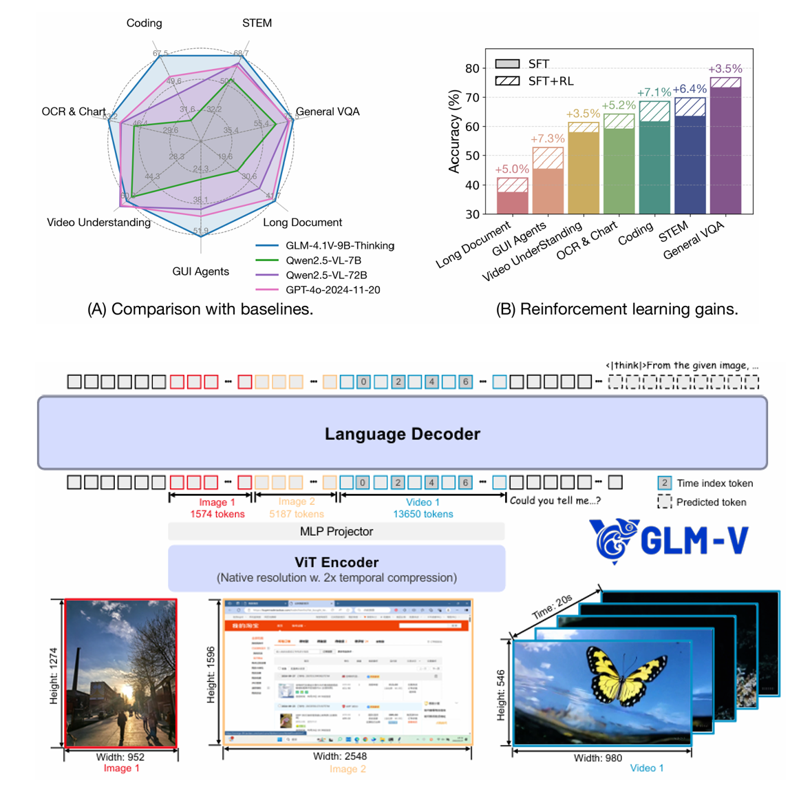

Biography
Hi! My name is Leyi Pan (潘乐怡). I am currently a 3rd-year Ph.D. student at Tsinghua University. Before that, I received my B.Eng. from Tsinghua University in 2024.
I am currently a member of the Top Talent Intern Program at Minimax, working in the Foundation Model Team, Reinforcement Learning Group, where I contribute to releases of the M-series LLMs. From July 2025 to July 2026, I was a research intern on LLM reasoning and reinforcement learning at Tongyi Lab, Alibaba Group. Previously, I interned at Z.ai, where I contributed to the GLM-4.5V and GLM-4.1V-Thinking models.
My research interests mainly lie in:
- LLM Reinforcement Learning (current focus)
- Trustworthy AI
Feel free to reach out if you would like to discuss research or explore potential collaboration!
News
- 2026.07 Omni-SafetyBench is accepted by ACM MM 2026!
- 2026.07 MarkDiffusion is accepted by JMLR!
- 2026.07 Joined Minimax through the Top Talent Intern Program.
- 2026.06 MarkLLM has reached 1k stars!
- 2026.04 d-TreeRPO is accepted by ACL 2026 Main!
- 2025.07 Joined Tongyi Lab, Alibaba Group, as a Research Intern.
- 2025.05 Can LLM Watermarks Robustly Prevent Unauthorized Knowledge Distillation? is accepted by ACL 2025 Main.
- 2024.10 Joined Z.ai AI Lab as a Research Intern.
- 2024.06 Joined CUHK MISC Lab as a Research Assistant.
- 2023.06 Joined KuaiShou Technology as a Research Intern.
Education
-
 2024.09 - Present, Ph.D. @ Tsinghua University, Beijing, China.
2024.09 - Present, Ph.D. @ Tsinghua University, Beijing, China. -
2020.09 - 2024.06, B.E. @ Tsinghua University, Beijing, China.
Internships
- 2026.07 - Present
Minimax, Top Talent Intern Program
- Foundation Model Team, Reinforcement Learning Group. Contributing to releases of the M-series LLMs.
- 2025.07 - 2026.07
 Tongyi Lab, Alibaba Group, Research Intern
Tongyi Lab, Alibaba Group, Research Intern - Topic: LLM reasoning and reinforcement learning.
- 2024.10 - 2025.06
AI Lab, Z.ai, Research Intern
- Topic: Reasoning and reinforcement learning for multimodal large language models.
- 2024.06 - 2024.08
 CUHK MISC Lab, Research Assistant
CUHK MISC Lab, Research Assistant - Topic: Trustworthy AI.
- 2023.06 - 2023.08
KuaiShou Technology, Research Intern
- Topic: Tool-integrated agent.
Projects



Selected Preprints / Publications
A full publication list is available on my Google Scholar page. (* denotes equal contribution)
LLM Reinforcement Learning (current focus)


Trustworthy AI


Service
- Reviewer: ACL ARR, NeurIPS, ICLR.
Honors and Awards
- 2025 Tsinghua Excellent First-class Scholarship / 清华大学综合优秀一等奖学金.
- 2024 Outstanding Graduate of Beijing / 北京市优秀毕业生.
- 2024 Outstanding Graduate of Tsinghua / 清华大学优良毕业生.
- 2024 Tsinghua Outstanding Graduation Project / 清华大学优秀毕业设计.
- 2021-2023 Tsinghua Excellent Student Award / 清华大学综合优秀奖学金.
Contact
- Email: panly24@mails.tsinghua.edu.cn
- Email: panleyi2003@gmail.com